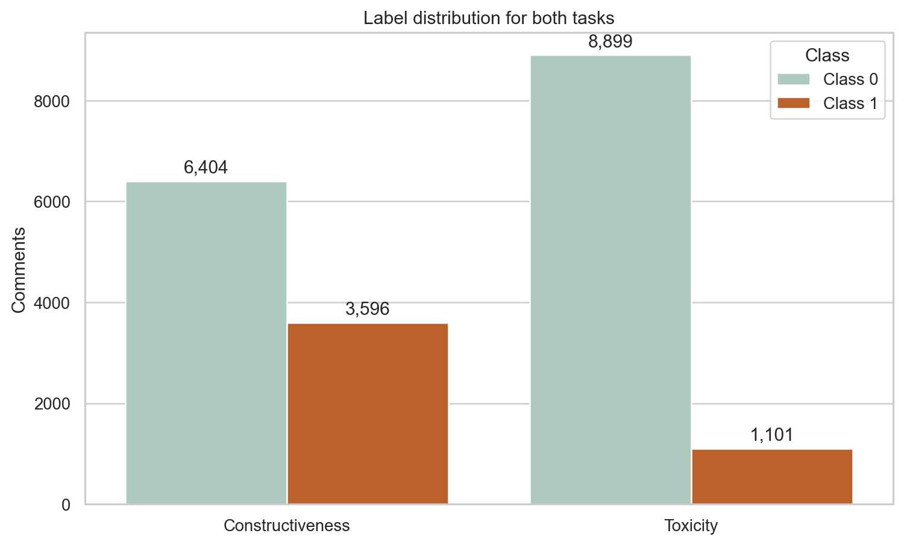
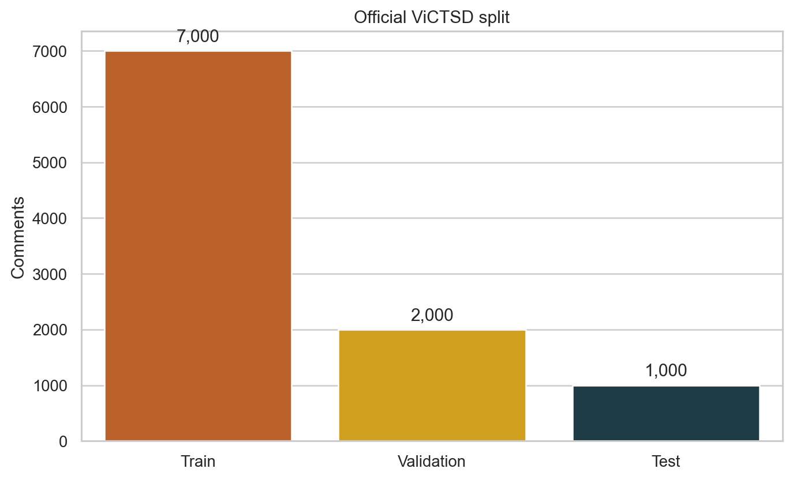
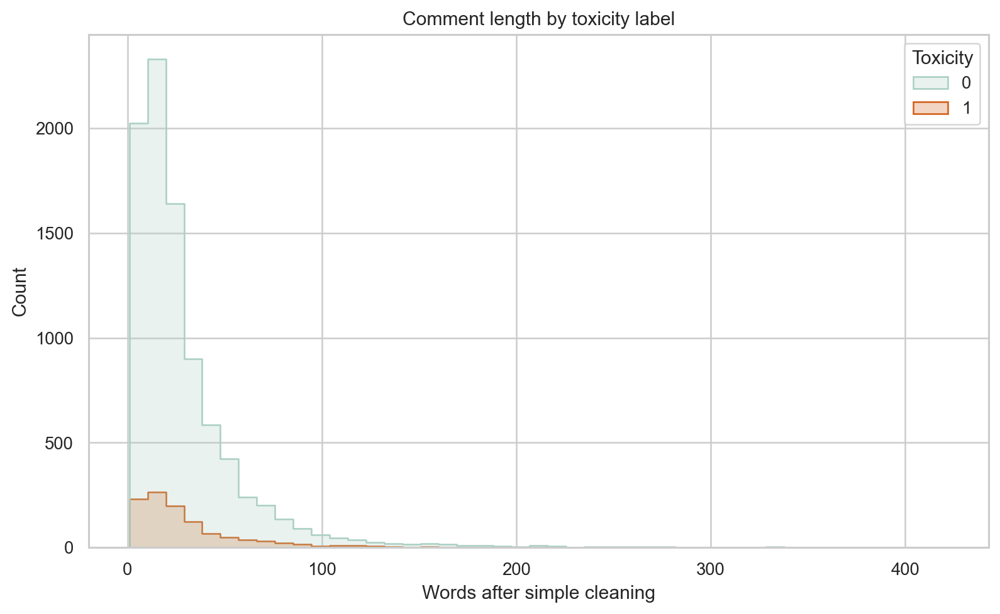
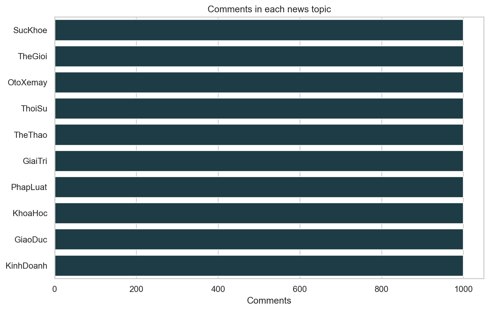
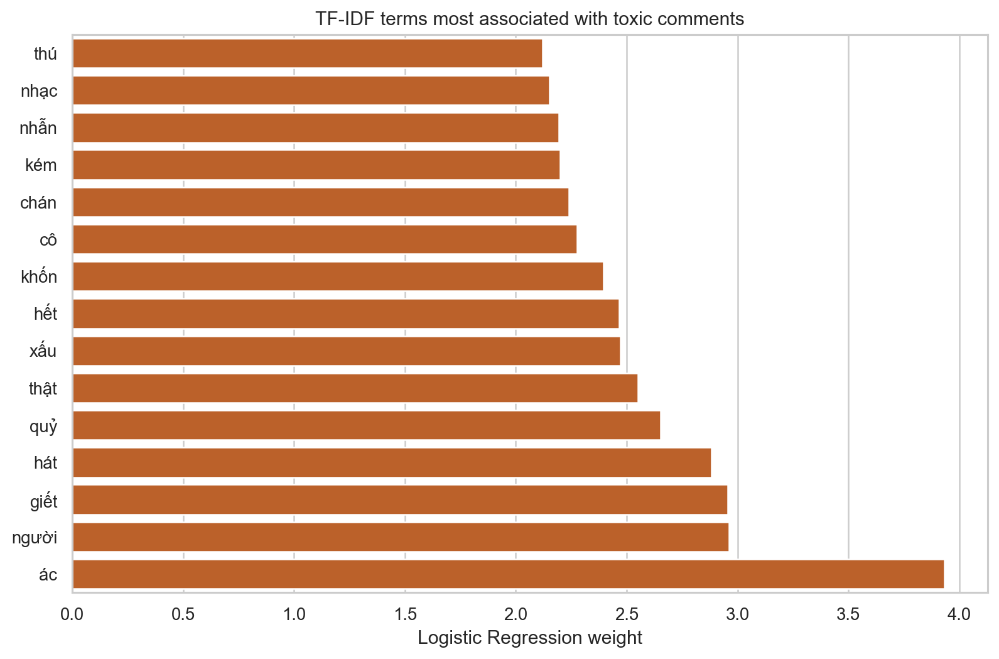
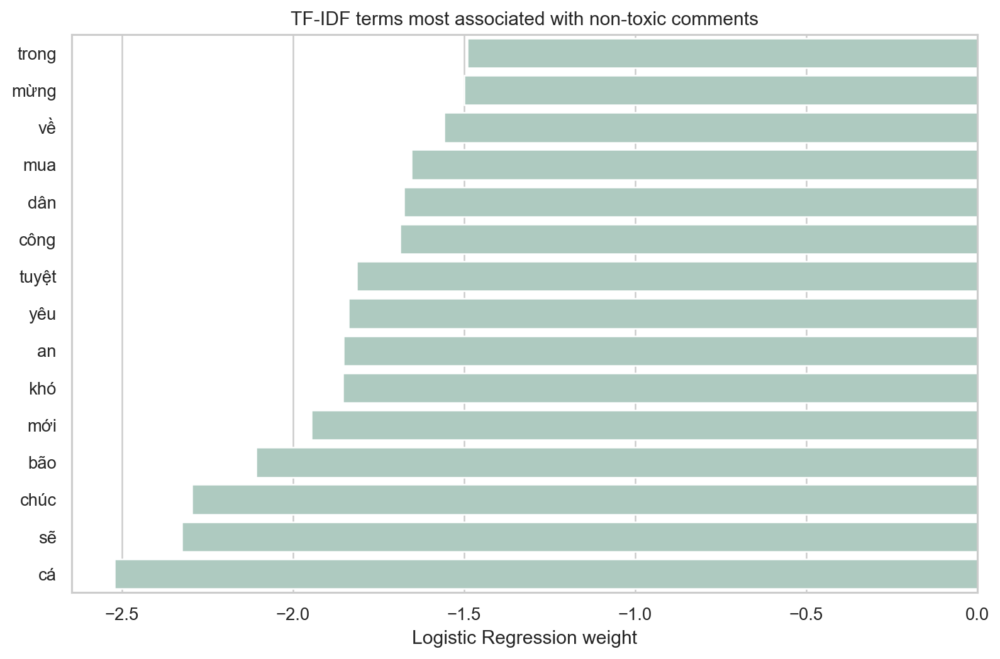
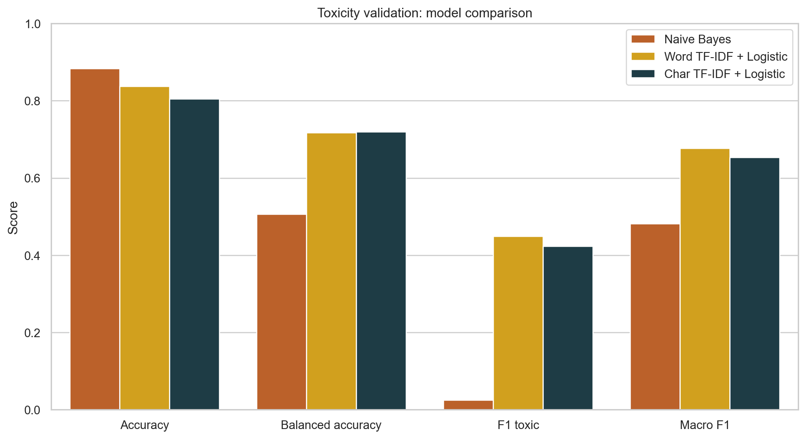
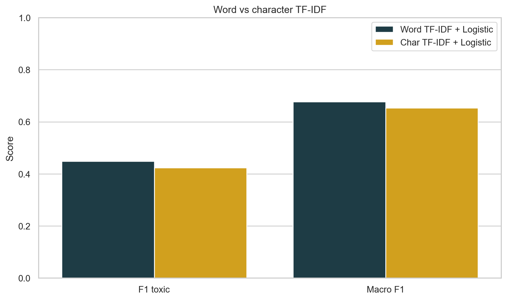
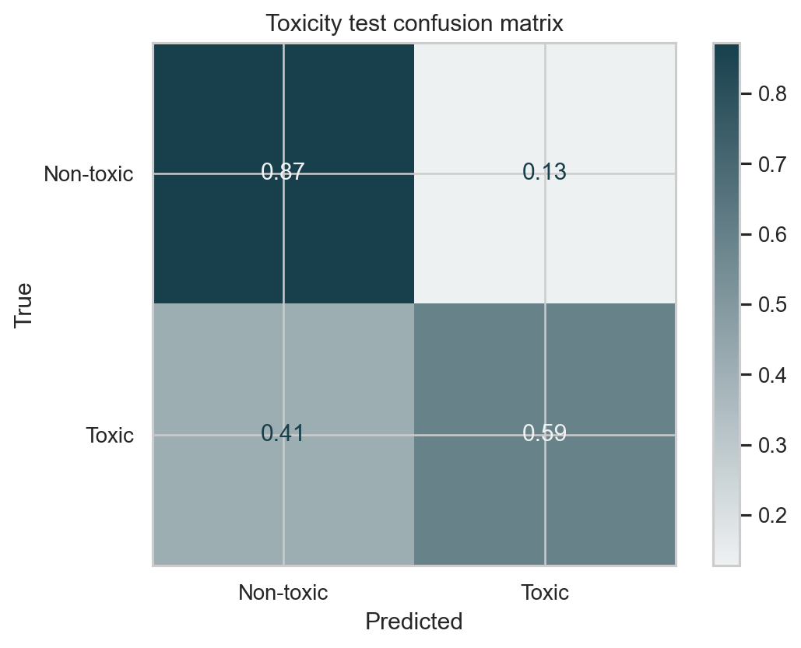
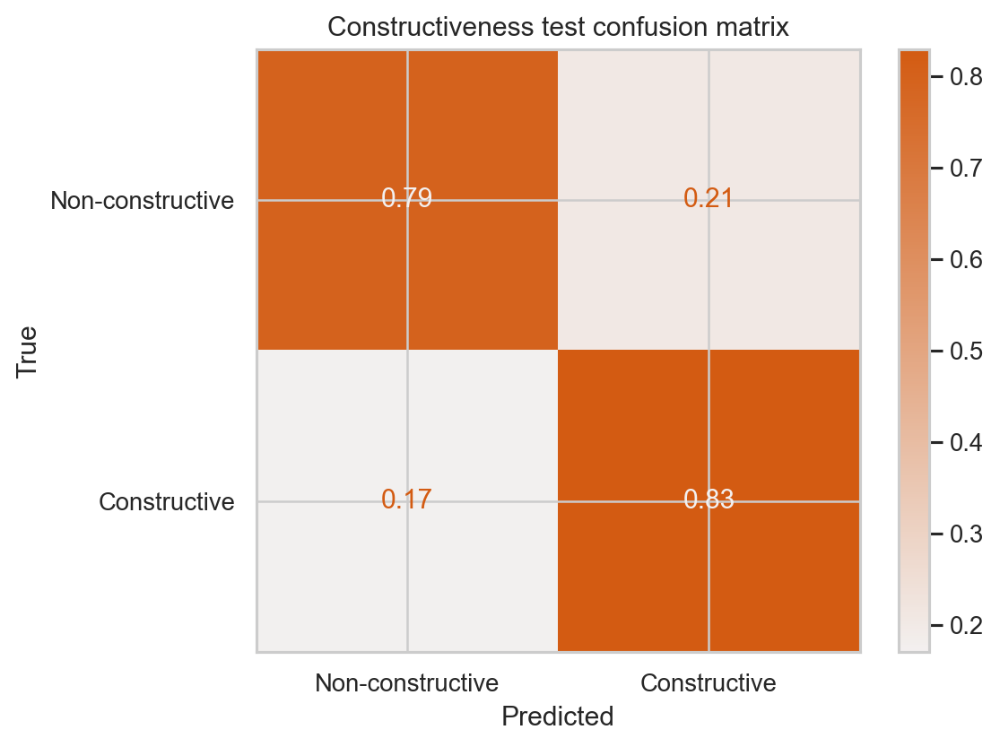

03 — TASKS / TEXT
UIT-VICTSD · VIETNAMESE TEXT CLASSIFICATION
Words, labels,
and context.
Khám phá 10.000 bình luận tiếng Việt, kiểm tra rò rỉ giữa các tập dữ liệu, trực quan hoá tín hiệu ngôn ngữ và xây dựng mô hình TF-IDF đơn giản, có thể chạy lại.
01 — DATASET OVERVIEW
LABEL DISTRIBUTION / TWO TASKSFIG. 02

Dự đoán Toxicity và Constructiveness từ nội dung một bình luận tiếng Việt.
10.000 văn bản, official train/validation/test split, EDA độc lập, tiền xử lý text và so sánh nhiều mô hình.
Kiểm tra bình luận trùng sau chuẩn hoá; loại 32 validation rows và 15 test rows xuất hiện trong train.
02 — FEATURE LIST & DATA TYPES
| # | Attribute | Data type | Role | Missing | Unique values | Description |
|---|---|---|---|---|---|---|
| 01 | Comment | text · object | Model input | 0 | 9,935 exact texts | Vietnamese user comment. This is the only field sent to the vectorizer. |
| 02 | Constructiveness | int · target | Target A | 0 | 2 | Binary annotation for whether the comment is constructive. |
| 03 | Toxicity | int · target | Target B | 0 | 2 | Binary annotation for toxic versus non-toxic content. |
| 04 | Title | text · object | Excluded | 0 | article titles | Article title provides context but is deliberately excluded from this compact model. |
| 05 | Topic | category | EDA only | 0 | 10 | Discussion category. Exactly 1,000 comments per topic across the source data. |
| 06 | Unnamed: 0 | int · index | Dropped | 0 | row ID | CSV export index; removed immediately because it has no language signal. |
03 — SPLITS, DUPLICATES & LEAKAGE CONTROL
OFFICIAL SOURCE SPLITFIG. 01

| Audit | Result | Why it matters | Decision in notebook |
|---|---|---|---|
| Missing values | 0 cells | No input value needs imputation. | Read the original text fields directly. |
| Duplicate raw rows | 0 per split | Each official file has no identical full row. | No row-level deduplication. |
| Exact comment duplicates | 65 combined | The same comment may recur under different source rows. | Keep for EDA; audit normalized text before evaluation. |
| Train → validation overlap | 32 rows | Repeated text could inflate validation score. | Score on 1,968 clean validation rows. |
| Train → test overlap | 15 rows | Repeated test text would be direct evaluation leakage. | Score final result on 985 clean test rows. |
04 — LENGTH & TOPIC EXPLORATION
COMMENT LENGTH / CHARACTERSFIG. 04

TOPIC DISTRIBUTIONFIG. 03

05 — DISCRIMINATIVE WORDS & N-GRAMS
TOXIC SIDE / POSITIVE WEIGHTSFIG. 05

NON-TOXIC SIDE / NEGATIVE WEIGHTSFIG. 06

Vietnamese comment→clean text→TF-IDF 1–2 grams→Logistic Regression
06 — MODEL COMPARISON
Choose fair
metrics.
Vì Toxicity là lớp thiểu số, mô hình không được chọn bằng accuracy một mình. Word TF-IDF + Logistic Regression cho macro F1 và toxic F1 tốt hơn baseline Naive Bayes.
THREE SIMPLE TOXICITY MODELS / VALIDATIONFIG. 07

WORD VS CHARACTER TF-IDFFIG. 08

07 — TEST RESULTS & ERROR REVIEW
TOXICITY / SELECTED MODELFIG. 09

CONSTRUCTIVENESS / WORD TF-IDFFIG. 10

| Topic | True toxicity | Prediction | Example from first error rows | What it shows |
|---|---|---|---|---|
| OtoXemay | Toxic · 1 | Non-toxic · 0 | “Nhiều người cứ nghĩ đạp xe là văn minh. haizzzz” | Subtle sarcasm and mild tone are difficult for word counts. |
| KhoaHoc | Toxic · 1 | Non-toxic · 0 | “Google, intel, Ibm của Mỹ đua công nghệ tạo ra...” | Context can matter more than one strongly weighted term. |
| PhapLuat | Non-toxic · 0 | Toxic · 1 | “ko có từ nào hình dung về 2 đứa này đc!...” | Informal shorthand and strong wording can create false positives. |
| SucKhoe | Non-toxic · 0 | Toxic · 1 | “Một cô giáo đang dạy âm nhạc ở lớp bên cạnh...” | Long contextual sentences remain challenging for bag-of-ngrams features. |
08 — CONCLUSION / REPRODUCIBILITY
Simple model,
honest evaluation.
- Official Vietnamese ViCTSD files are committed with the notebook.
- Every plot is generated independently from short, editable notebook cells.
- Normalized text overlap is checked before validation and test scoring.
- Word TF-IDF + balanced Logistic Regression is the selected beginner-friendly model.
- Macro F1 and toxic F1 prevent an accuracy-only interpretation.
- Confusion matrices and wrong examples show limitations, not only a single score.